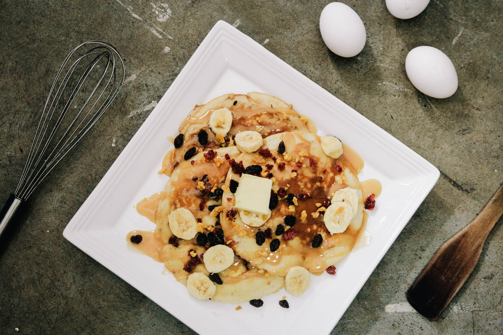
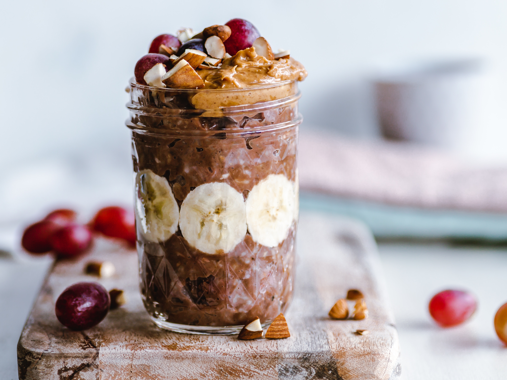
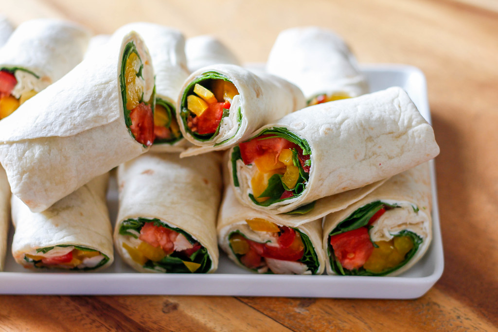
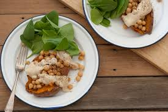
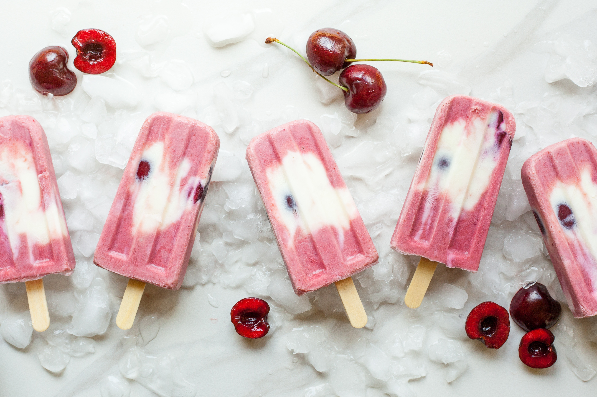

Banana Pancakes
- 1 banana, 1 egg, and oil for cooking
- Mash the 1 banana until it is smooth as possible (a few lumps is okay). Add desired flavoring if available (vanilla extract, cinnamon, nutmeg, etc). Mix in egg with banana. Cook in a meduim heat pan and cook until golden brown, about a minute on each side. Enjoy! Save to Watchlist

Overnight Oats
- Oatmeal (any kind), milk (any kind), toppings
- The trick with this recipe is to make the night before so it's ready in the morning. Perfect for a busy day! Cover 1/2 cup of oats into 1 cup milk and refridgerate overnight. Top with fruit, peanut butter, chocolate, or mix with protein powder for a well-balanced meal. Save to Watchlist

Avocado and poached eggs Toast
- Toast, avocado, eggs
- A simple and savory breakfast. Toast bread and place cut or mashed avocado on top of toast. Poach eggs by placing eggs into a pot of near boiling water (at least 4" deep) w/a half TSP of vinegar. Cook eggs for 3-4 minutes. Place poached egg on top of avocado toast. Save to Watchlist

Balanced Salad
- Greens, sweet potato, seeds, fruit, protein, vegetables
- How to create a filling salad! Start with your carbs by using cut up potatoes or legumes. Follow up with your greens of choice (spinach, chard, cooked kale, argula, etc). Pick your protein of chicken, tofu, even beef or bacon! Top with pumpkin seeds, almonds, cashews etc for a crunch and fruit for some sweetness. Cookies veggies are also great! Save to Watchlist

Spinach and Hummus Wrap
- tortilla, spinach, hummus, bell pepper, chicken or lunch meat
- Start by cutting up bell peppers into slices, make sure they will fit into the tortilla. Spread a layer of hummus onto the tortilla and place spinach, bell pepper, and chicken or lunch meat on tortilla. Wrap. Done! Save to Watchlist

Banana Nice Cream
- Frozen banana and milk or water
- Peel and cut up bananas into slices and place into freezer until completely hardened. Take the frozen bananas and place into a blender with a splash of milk or water. Blend until smooth. A healthy alternative to ice cream! Save to Watchlist

Stuffed Sweet Potato
- sweet potato, chickpeas, parsley for garnish
- Set oven to 350 degrees. Cut sweet potato in halves and cover in oil and seasonings (salt, pepper, paprika, garlic powder). Season chickpeas as well. Place sweet potato and chickpeas in oven-safe pan and cook for around 20-25 minutes. Mash center of sweet potatoe a bit and place chickpeas on top of sweet potato. Garnish with parsley and ranch, if desired. Save to Watchlist

Kale Chips
- Kale leaves, oil, nutritional yeast (for cheesy flavor)
- Set oven to 350 degrees. Cut kale leaves into small bite sized pieces (no stem). Make sure kale pieces are dry. Lightly coat in oil and add seasoning of choice (garlic powder/salt/nutritional yeast). Bake for 10-15 minutes. Save to Watchlist

Frozen Yogurt Popsicles
- Frozen yogurt, fruit
- Take greek yogurt and place into popsicle molds. Cut up fruit if desired and place into popsicle molds with greek yogurt. Freeze overnight. Save to Watchlist